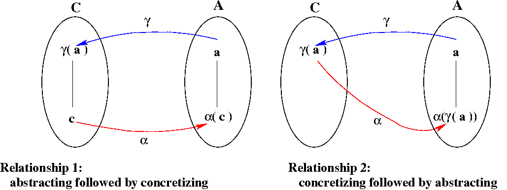
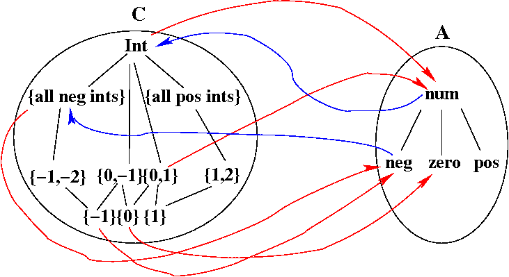
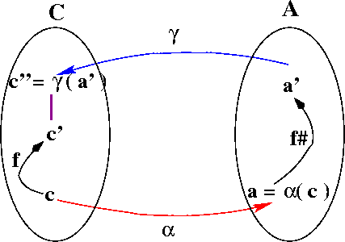

Static Analysis involves finding properties of programs without
actually running them.
There are many reasons why people want to do static analysis,
including the following:
Most interesting properties of programs are undecidable, and even those
that are not may be very expensive to compute.
Therefore, static analysis usually involves some kind of abstraction.
For example, instead of keeping track of all of the values that
a variable may have at each point in a program, we might only keep track
of whether a variable's value is positive, negative, zero, or unknown.
Abstraction makes it possible to discover interesting properties of programs,
but the results of static analysis are usually incomplete:
for example, an analysis may say that a variable's value is unknown
at a point when in fact the value will always be positive at that point.
In CS 701 we studied
Dataflow Analysis.
That is a commonly used framework for static analysis.
However, one problem with standard dataflow analysis is that it
provides no guarantees that the results are consistent with the
program's semantics.
In contrast, abstract interpretation is a static-analysis framework
that does guarantee that the information gathered about a
program is a safe approximation to the program's semantics.
This property is achieved by establishing key relationships between the
static analysis and the formal semantics.
Motivation and Overview
| ⊕ | neg | zero | pos | num |
|---|---|---|---|---|
| neg | neg | neg | num | num |
| zero | neg | zero | pos | num |
| pos | num | pos | pos | num |
| num | num | num | num | num |
| ⊗ | neg | zero | pos | num |
|---|---|---|---|---|
| neg | pos | zero | neg | num |
| zero | zero | zero | zero | zero |
| pos | neg | zero | pos | num |
| num | num | zero | num | num |
Here are the abstract valuation functions; note that the abstract meaning of an integer expression is a Sign.
Eabs[[n]] = if (n<0) then neg else if (n=0) then zero else pos
Eabs[[E1 + E2]] = Eabs[[E1]] ⊕ Eabs[[E2]]
Eabs[[E1 * E2]] = Eabs[[E1]] ⊗ Eabs[[E2]]
And here is an example of applying the abstract interpretation to an expression:
The abstract interpretation defined above for the "rule-of-signs"
example was very simple and intuitive.
Assuming that I didn't make any typographical errors when typing in the
two tables, it shouldn't be hard to convince yourself that the abstract
semantics is consistent with the standard (concrete) semantics.
However, to be sure that this consistency holds, we must do the
following:
1. Abstraction function α.
For the rule-of-signs example, the abstraction function is defined as follows:
2. Concretization function γ.
And the concretization function is defined as follows:
3. Galois Connection.
A Galois connection is a pair of
functions, α
and γ between two partially ordered sets
(C, ⊆) and (A, ≤), such that both of the following hold.
Here are the two relationships we need, presented pictorially:
For our example, poset A is the set containing the four elements of Sign
(with num as the top element, and no ordering relationship among the
other three elements),
and poset C is the set of all sets of integers, ordered by subset.
Here is a picture with all of A and some of C.
Some of the alpha mapping (the abstraction function) is shown using
red arrows, and some of the gamma mapping (the concretization function)
is shown using blue arrows.
Question 1: Fill in the remaining alpha and gamma edges in the figure above.
Question 2: Show that alpha and gamma do form a Galois connection.
4. Safety.
Our final obligation in proving that our rule-of-signs abstract
interpretation is consistent with the standard semantics is
to prove that, for every expression exp,
Base case: exp is literal k.
This case has three parts (based on the definition of Eabs):
Inductive Step
The inductive step is quite tedious.
There are two cases (one for addition and one for multiplication), and
each has 16 sub-cases (for all possible combinations of
the signs of the two sub-expressions).
Here is one example to show the flavor of the proof.
Inductive case 1: exp is e1 + e2.
sub-case 1:
both Eabs[[e1]] and Eabs[[e2]] are neg.
By the induction hypothesis, E[[e1]] is a subset of
γ(Eabs[[e1]]),
which is γ(neg), which is
the set of all negative ints.
The same applies to E[[e1]].
Thus, the LHS is the sum of two negative ints, which is a negative
int, which is certainly a subset of { all negative ints } (the final
value for the RHS).
In what way does proving that
For the simple rule-of-signs example, we were able to define
an abstract interpretation as a variation on the standard
denotational semantics.
For more realistic static-analysis problems, however, the
standard denotational semantics is usually not a good place to start.
This is because we usually want the results of static analysis to
tell us what holds at each point in the program, and program
points are usually defined to be the nodes of the program's
control-flow graph (CFG).
For example, for constant propagation we want to know, for each
CFG node, which variables are guaranteed to have constant
values when execution reaches that node.
Therefore, it is better to start with a (standard) semantics
defined in terms of a CFG.
There are various ways to define a CFG semantics.
The most straightforward is to define what is called an
operational semantics;
think of it as an interpreter whose input is the entry node of a CFG
plus an initial state (a mapping from variables to values),
and whose output is the program's final state.
We'll define the standard sementics in terms of
transfer functions, one for each CFG node.
These are (semantic) functions whose inputs are states and whose
outputs are pairs that include both an output state and
the CFG node that is the appropriate successor.
A node's transfer function captures the execution semantics
of that node and specifies the next node to be executed.
For example, consider the CFG shown below (with labels on the nodes).
For this example, the transfer function for node 2 would be defined
as follows:
Here's a (recursive) definition of the interpreter (the operational
semantics).
We use fn to mean the transfer function defined for
CFG node n.
Because this definition is recursive, we need to use the usual trick of
abstracting on the function and defining the operational semantics
as the least fixed point of that abstraction:
While the operational semantics discussed above is defined in terms of
the program's CFG, it has two properties that are undesirable
as the basis for an abstract interpretation:
We will define a collecting semantics that maps CFG nodes to sets
of states;
i.e., for each CFG node n, the collecting semantics tells us what
states can arise just before n is executed.
The "approximate semantics" that we define using abstract interpretation
will compute, for each CFG node, (a finite representation of) a superset of
the set of states computed for that node by the collecting semantics.
By showing that our abstract interpretation really does compute
a superset of the possible states that can arise at each CFG node,
we show that it is consistent with the program's actual semantics.
Because the collecting semantics involves sets of states, we need to
define transfer functions whose inputs and outputs are sets of states.
We'll define one function fn→m for each CFG edge
n→m.
That transfer function will be defined in terms of the (original) transfer
function fn defined for the CFG node n:
For example, the transfer function for edge 2→3 of the example CFG
given above would be defined as follows:
What is the transfer function (for the collecting semantics)
for edge 4→5 of the example CFG?
Our collecting semantics will be of type
CFG-node → set-of-states.
The (recursive) definition is given below.
It defines the set of states that holds just before node n to be
the union of the sets of states produced by applying
the transfer functions of all of n's in-edges
to the sets of states that hold just before the sources of those
in-edges execute.
And here's the non-recursive definition:
The values computed for iterations 9 and 10 are the same, so line 9
of the table defines function coll.
Relationship between standard and abstract interpretations.
{ E[[exp]] } ⊆ γ(Eabs[[exp]])
where ⊆ is the ordering of poset C, i.e., the subset ordering.
α({0}) =
zero
α(S) =
if all values in S are greater than 0 then pos
else if all values in S are less than 0 then neg
else num
γ(zero) = {0}
γ(pos) = {all positive ints}
γ(neg) = {all negative ints}
γ(num) = Int (i.e., all ints)


{ E[[exp]] } ⊆ γ(Eabs[[exp]])
This can be done using structural induction.
and {k} is a subset of {all negative ints} (case proved).
E[[k]] = k
// def of E
Eabs[[k]] = neg
// def of Eabs
γ(neg) = {all negative ints}
// def of γ
and {0} is a subset of {0} (case proved).
E[[k]] = 0
// def of E
Eabs[[k]] = zero
// def of Eabs
γ(zero) = {0}
// def of γ
and {k} is a subset of {all positive ints} (case proved).
E[[k]] = k
// def of E
Eabs[[k]] = pos
// def of Eabs
γ(pos) = {all positive ints}
// def of γ
RHS:
γ(Eabs[[e1 + e2]])
= γ(Eabs[[e1]] ⊕ Eabs[[e2]])
// def of Eabs
= γ(neg ⊕ neg)
= γ(neg)
// def of ⊕
= { all negative ints }
// def of γ
LHS:
E[[e1 + e2]]
= E[[e1]] + E[[e2]]
// def of E
{ E[[exp]] } ⊆ γ(Eabs[[exp]])
show that our rule-of-signs abstract interpretation is consistent with
the standard semantics?
Standard and Collecting Semantics for CFGs
Standard Semantics
+----------+
| 1: start |
+----------+
|
v
+----------+
| 2: a = 1 |
+----------+
|
v
+----------+
| 3: b = 1 |
+----------+
|
v
+----------+ F +------------+ +---------+
+---> | 4: a < 3 |---->| 6: c = a+b |---->| 7: exit |
| +----------+ +------------+ +---------+
| |
| T |
| v
| +------------+
| | 5: a = a+b |
| +------------+
| |
| |
+-----------+
λs.(s[a ← 1], 3)
where s[a ← 1] means "a new state that is the same as s except that
it maps variable a to 1."
For node 4, the transfer function would be
λs.(if lookup(s, a) < 3 then (s, 5) else (s, 6))
In this case, the output state is the same as the input state;
the successor node depends on whether variable a is less than 3
in the current (input) state.
interp = λs.λn.
if isExitNode(n) then s
else let (s', n') = fn(s) in interp s' n'
semantics = fix(λF.λs.λn.
if isExitNode(n) then s
else let (s', n') = fn(s) in F s' n')
Collecting Semantics
The advantage of abstract interpretation compared to the kind
of dataflow analysis we studied in CS 701 is that it provides a
guarantee about the relationship between the program's semantics
and the analysis results.
To obtain that advantage, we need a semantics that includes information
about the set of states that can arise at each CFG node given any possible
initial state.
That kind of semantics is called a collecting semantics.
fn→m = λS.{s' | s∈S and fn(s) = (s', m)}
λS.{s[a ← 1] | s ∈ S}
.
recColl = λn.
if isEnterNode(n) then { all states }
else let P = preds(n) in ∪p ∈ P fp→n(recColl(p))
For our example program, we can actually find coll
by iterating up from bottom.
The elements of concrete poset C are sets of states (each with a value
for variables a, b, and c) and the ordering is subset.
This means that the bottom element of the poset is the empty set,
and the bottom function is the one that ignores its input and returns
the empty set.
Below is a table that shows the computation of coll.
We use the notation [ v1 v2 v3 ]
to mean a state in which a=v1, b=v2, and c=v3.
A tuple with a star, e.g., [1 * *], represents an infinite
set of states, including all possible values in place of the star
(so [ * * * ] represents all states, and [1 * *] represents all
states in which the only constraint is that a=1).
coll = fix(λF.λn.
if isEnterNode(n) then { all states }
else let P = preds(n) in ∪p ∈ P fp→n(F(p))
| Iteration # | Node 1 | Node 2 | Node 3 | Node 4 | Node 5 | Node 6 | Node 7 |
|---|---|---|---|---|---|---|---|
| 0 | ∅ | ∅ | ∅ | ∅ | ∅ | ∅ | ∅ |
| 1 | [ * * * ] | ∅ | ∅ | ∅ | ∅ | ∅ | ∅ |
| 2 | [ * * * ] | [ * * * ] | ∅ | ∅ | ∅ | ∅ | ∅ |
| 3 | [ * * * ] | [ * * * ] | [ 1 * * ] | ∅ | ∅ | ∅ | ∅ |
| 4 | [ * * * ] | [ * * * ] | [ 1 * * ] | [ 1 1 * ] | ∅ | ∅ | ∅ |
| 5 | [ * * * ] | [ * * * ] | [ 1 * * ] | [ 1 1 * ] | [ 1 1 * ] | ∅ | ∅ |
| 6 | [ * * * ] | [ * * * ] | [ 1 * * ] | [ 1 1 * ] [ 2 1 * ] | [ 1 1 * ] | ∅ | ∅ |
| 7 | [ * * * ] | [ * * * ] | [ 1 * * ] | [ 1 1 * ] [ 2 1 * ] | [ 1 1 * ] [ 2 1 * ] | ∅ | ∅ |
| 8 | [ * * * ] | [ * * * ] | [ 1 * * ] | [ 1 1 * ] [ 2 1 * ] [ 3 1 * ] | [ 1 1 * ] [ 2 1 * ] | ∅ | ∅ |
| 9 | [ * * * ] | [ * * * ] | [ 1 * * ] | [ 1 1 * ] [ 2 1 * ] [ 3 1 * ] | [ 1 1 * ] [ 2 1 * ] | [ 3 1 * ] | ∅ |
| 10 | [ * * * ] | [ * * * ] | [ 1 * * ] | [ 1 1 * ] [ 2 1 * ] [ 3 1 * ] | [ 1 1 * ] [ 2 1 * ] | [ 3 1 * ] | [ 3 1 4 ] |
| 11 | [ * * * ] | [ * * * ] | [ 1 * * ] | [ 1 1 * ] [ 2 1 * ] [ 3 1 * ] | [ 1 1 * ] [ 2 1 * ] | [ 3 1 * ] | [ 3 1 4 ] |
What property of the example program allows us to compute coll? What modification to the program would cause the fixed-point iteration to be infinite (and thus not computable)?
To define an abstract interpretation we need to do the following:
This proof obligation is illustrated in the diagram below;
the ⊆ relationship that must be proved (step 6)
is shown using a purple line in the concrete domain.
Given an abstract interpretation, we can define the abstract semantics
recursively or non-recursively, as we did for the collecting semantics.
The definitions given below define the abstract semantics as a mapping
CFG-node → abstract state.
The abstract state that holds at CFG node n (a safe approximation
to the set of concrete states that hold just before n executes)
is the join
of the abstract states produced by applying the abstract transfer
functions of all of node n's incoming CFG edges to the abstract
states that hold before those edges' source nodes.
And here's the non-recursive definition:
Here is a definition of constant propagation:
The ordering of the abstract domain is based on the underlying
flat ordering of individual values in which ? is the top element, and
all other values are incomparable.
Given two abstract states, a1 and a2,
a1 ≤ a2 iff
A Galois insertion is a stronger relationship than a
Galois connection.
Functions α
and γ form a Galois insertion
iff
Show that functions α
and γ defined above for constant propagation
form a Galois insertion (by proving point 2 above).
How does abstract interpretation compare with the kind of dataflow
analysis studied in CS 701?
One thing that may look like a significant difference but in fact is not,
is the way the analyses are actually carried out.
In 701, we did the following:
Abstract interpretation is similar: To ensure termination of an iterative
algorithm, the abstract domain must be a complete
lattice with no infinite ascending chains, and the abstract transfer
functions must still be monotonic.
The solution is computed by iterating up from bottom, instead of down from
top, but since a complete lattice is "symmetric", this is just a cosmetic
difference.
The real difference between the two approaches is that for 701-style
dataflow analysis, we define the lattice elements and the CFG-node
dataflow functions based only on intuition.
Therefore, there is no guarantee that the solution to a dataflow problem
has any relationship to the program's semantics.
In contrast, since part of abstract interpretation involves showing
relationships between the concrete and abstract semantics, we do
have such guarantees.
The price we pay is that it is not always clear how to define dataflow
problems of interest using abstract interpretation.
For example, problems like reaching definitions require knowing
more than just the sets of states that can arise at each CFG node:
we also need to know which other CFG nodes assigned the values to
the variables.
This is usually done by defining an instrumented collecting
semantics, which keeps additional information (like the label of
the CFG node that most recently assigned to a variable) in a state.
While this allows reaching definitions to be defined, it may seem
rather ad hoc.
A similar issue arises with backward problems like live variable analysis.
One interesting approach to defining the live-variables problem using
abstract interpretation and continuation semantics is given in a set of
lecture notes called
Introduction to Abstract Interpretation by Mads Rosendahl.
Abstract Interpretation

recAbs = λn.
if isEnterNode(n) then α({all states})
else let P = preds(n) in
∪p ∈ P f#p→n(recAbs(p))
abs = fix(λF.λn.
if isEnterNode(n) then α({all states})
else let P = preds(n) in
∪p ∈ P f#p→n(F(p))
Example: Constant Propagation
λs.s[x ← lookup(s, y) ⊕ lookup(s, z)]
where s is an abstract state, and ⊕ returns ?
if either of its arguments is ? (and otherwise is the same as
regular +).
Comparison with CS 701-style Dataflow Analysis